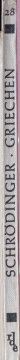
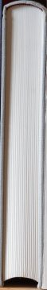
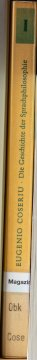
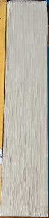

Contents claim packet
Sweep sim_philosophy_shelf · captured 2026-10-17T12:00:00+00:00 · IN / INR · sweep 14.0 s
Integrity check passed: every price has a source, URL and date; every frame reference opens; totals equal the sum of the lines.
Totals
Books counted
24
14 identified · 10 unidentified
Books, replacement
INR 11,852
used value INR 14,514
Other items, replacement
INR 0 – INR 0
Shelf run
0.5 m
Excluded from totals
19
unpriced, unidentified or for appraisal
Review queue
27
Room
Dimensions (L × W × H)
— × — × — m
Floor area
— m²
— ft²
Wall area
— m²
— ft²
Wall covered by shelving
— m²
Scale: 3D reconstruction (DA3-SMALL) scaled by 1 catalogue anchor; up from mean camera up-axis (no motion data) · confidence 0.0
Books (24)
| ID | Shelf · pos | Status | Title / author / edition | Spine (cm) | Replacement | Used | Conf. | |
|---|---|---|---|---|---|---|---|---|
| book_001 | Unit A shelf 1 · 1 | unidentified | — | 21.8 × 0.3 | — | — | 0.00 | |
| book_002 | Unit A shelf 1 · 2 | identified | Gesammelte Aufsätze II — Theodor Ebert
spine: “II | GESAMMELTE AUFSÄTZE | Ebert” |
22.3 × 3.5 | — | — | 0.80 | |
| book_003 | Unit A shelf 1 · 3 | unidentified | — | 16.1 × 1.1 | — | — | 0.00 | |
 |
book_004 | Unit A shelf 1 · 4 | unidentified | —
spine: “28 | GRIECHEN | SCHRÖDINGER | rde” |
17.9 × 1 | — | — | 0.45 |
| book_005 | Unit A shelf 1 · 5 | needs appraisal | Physical World of the Greeks — Samuel Sambursky
spine: “The Physical World of the Greeks | S. Sambursky | RKP” binding looks antiquarian (leather/cloth with gilt lettering or visible age) |
21 × 2.2 | — | — | 0.92 | |
| book_006 | Unit A shelf 1 · 6 | unidentified | — | 4.6 × 1.2 | — | — | 0.00 | |
| book_007 | Unit A shelf 1 · 7 | identified | Antike Themen und ihre moderne Verwandlung — Bubner
spine: “st w 998 | Bubner Antike Themen und ihre moderne Verwandlung” |
16.9 × 2 | — | — | 0.66 | |
 |
book_008 | Unit A shelf 1 · 8 | unidentified | — | 15.8 × 2.4 | — | — | 0.00 |
| book_009 | Unit A shelf 1 · 9 | unidentified | — | 16.6 × 1.3 | — | — | 0.00 | |
| book_010 | Unit A shelf 1 · 10 | unidentified | — | 16.6 × 1.9 | — | — | 0.00 | |
| book_011 | Unit A shelf 1 · 11 | unidentified | — | 16.3 × 1.9 | — | — | 0.00 | |
| book_012 | Unit A shelf 1 · 12 | identified | Shame and Necessity — Bernard Williams University of California 1994 · ISBN 0520088301
spine: “WILLIAMS | Shame and Necessity | CALIFORNIA” |
22.2 × 1.9 | INR 3,454 amazon.in (seller: GALAXY BOOK25) via retailer page fetched with TinyFish (2 matching offers, median) · 2026-10-17 |
— | 0.95 | |
| book_013 | Unit A shelf 1 · 13 | identified | Antike Denker über den Staat — Adomeit
spine: “UTB 1136 | Adomeit Antike Denker über den Staat” |
18.1 × 1.1 | INR 4,480 converted from USD 47.18 amazon.com (seller: Amazon) via retailer page fetched with TinyFish (1 matching offer, median) · 2026-10-17 |
INR 1,066 used, good (as listed by the seller) · 2026-10-17 |
0.66 | |
| book_014 | Unit A shelf 1 · 14 | identified | Griechisches Rechtsdenken I — Erik Wolf
spine: “Erik Wolf | GRIECHISCHES RECHTSDENKEN | I” |
23 × 3.2 | — | INR 8,130 used, good (as listed by the seller) · 2026-10-17 |
0.95 | |
| book_015 | Unit A shelf 1 · 15 | identified | Griechisches Rechtsdenken II — Erik Wolf
spine: “Erik Wolf | GRIECHISCHES RECHTSDENKEN | II” |
22.6 × 3.6 | — | — | 0.95 | |
| book_016 | Unit A shelf 1 · 16 | identified | Einführung in die Philosophie des Mythos — Luc Brisson
spine: “Brisson Einführung in die Philosophie des Mythos” |
21 × 2.1 | — | — | 0.95 | |
| book_017 | Unit A shelf 1 · 17 | identified | Glaubten die Griechen an ihre Mythen? — Paul Veyne
spine: “NF 226 | Veyne Glaubten die Griechen an ihre Mythen? 1226” |
17.3 × 1.3 | INR 1,996 converted from USD 21.02 amazon.com (seller: SuperBookDeals---) via retailer page fetched with TinyFish (2 matching offers, median) · 2026-10-17 |
INR 1,848 used, good (as listed by the seller) · 2026-10-17 |
0.95 | |
| book_018 | Unit A shelf 1 · 18 | identified | Die Theorie des Schönen in der Antike — Grassi
spine: “Grassi Die Theorie des Schönen in der Antike | id” |
20.1 × 2.7 | INR 816 converted from USD 8.59 amazon.com (seller: Amazon) via retailer page fetched with TinyFish (1 matching offer, median) · 2026-10-17 |
INR 827 used, good (as listed by the seller) · 2026-10-17 |
0.66 | |
| book_019 | Unit A shelf 1 · 19 | identified | Geschichte der Sprachtheorie 2 — Schmitter (Hrsg.)
spine: “gnv | Schmitter (Hrsg.) Geschichte der Sprachtheorie | 2” |
22.8 × 3.6 | — | — | 0.66 | |
 |
book_020 | Unit A shelf 1 · 20 | identified | Die Geschichte der Sprachphilosophie I — Eugenio Coseriu
spine: “Obk Cose | Magazin | EUGENIO COSERIU • Die Geschichte der Sprachphilosophie | I” |
20.8 × 2.2 | — | — | 0.66 |
 |
book_021 | Unit A shelf 1 · 21 | unidentified | — | 16.6 × 3.1 | — | — | 0.00 |
| book_022 | Unit A shelf 1 · 22 | identified | Philosophen der Antike I — Friedo Ricken Kohlhammer 1996 · ISBN 9783170127197
spine: “458 | RICKEN (Hrsg.) · Philosophen der Antike I” |
20.7 × 3 | — | — | 0.79 | |
| book_023 | Unit A shelf 1 · 23 | identified | Philosophen der Antike II — Friedo Ricken
spine: “459 | RICKEN (Hrsg.) · Philosophen der Antike II” |
18.8 × 2.4 | INR 1,106 converted from USD 11.65 amazon.com (seller: Amazon) via retailer page fetched with TinyFish (1 matching offer, median) · 2026-10-17 |
INR 2,642 used, good (as listed by the seller) · 2026-10-17 |
0.78 | |
| book_024 | Unit A shelf 1 · 24 | unidentified | — | 19.1 × 0.7 | — | — | 0.00 |


Other items (1)
| ID | Category | Description | Size w × h (cm) | Status | Replacement | Source | |
|---|---|---|---|---|---|---|---|
| item_001 | shelving | wooden bookshelf (wood) | — × — | range | — |
Review queue (27)
| Line | Reason |
|---|---|
| book_001 | shelved backwards (page edges facing out): spine not visible |
| book_002 | no price found: no matching listing found; excluded from totals |
| book_003 | shelved backwards (page edges facing out): spine not visible |
| book_004 | weak match to 'Die Natur und die Griechen' (confidence 0.45) |
| book_005 | needs human appraisal: binding looks antiquarian (leather/cloth with gilt lettering or visible age) |
| book_006 | spine not readable |
| book_007 | identification confidence 0.66: title as printed on the spine; no catalogue record found |
| book_007 | no price found: no matching listing found; excluded from totals |
| book_008 | shelved backwards (page edges facing out): spine not visible |
| book_009 | shelved backwards (page edges facing out): spine not visible |
| book_010 | shelved backwards (page edges facing out): spine not visible |
| book_011 | shelved backwards (page edges facing out): spine not visible |
| book_013 | identification confidence 0.66: title as printed on the spine; no catalogue record found |
| book_015 | no price found: no matching listing found; excluded from totals |
| book_016 | no price found: no matching listing found; excluded from totals |
| book_018 | identification confidence 0.66: title as printed on the spine; no catalogue record found |
| book_019 | identification confidence 0.66: title as printed on the spine; no catalogue record found |
| book_019 | no price found: no matching listing found; excluded from totals |
| book_020 | identification confidence 0.66: title as printed on the spine; no catalogue record found |
| book_020 | no price found: no matching listing found; excluded from totals |
| book_021 | shelved backwards (page edges facing out): spine not visible |
| book_022 | no price found: no matching listing found; excluded from totals |
| book_022 | no scale anchor on this shelf: dimensions assume a 21 cm median book |
| book_024 | spine not readable |
| item_001 | no price: no listing found; excluded from totals |
| item_001 | dimensions not measured |
| room | reconstruction too flat to find floor and ceiling (was the whole room swept?) |
Locale check: 5 books priced in IN and US
| Book | IN (INR) | US (USD) |
|---|---|---|
| Shame and Necessity | INR 3,454 | INR 45 |
| Antike Denker über den Staat | INR 4,480 converted | INR 47 |
| Glaubten die Griechen an ihre Mythen? | INR 1,996 converted | INR 21 |
| Die Theorie des Schönen in der Antike | INR 816 converted | INR 9 |
| Philosophen der Antike II | INR 1,106 converted | INR 12 |
Cost and latency
| Stage | Seconds | Model calls | Tokens in / out | HTTP (cached) | USD |
|---|---|---|---|---|---|
| detect | 0.0 | 0 | 0 / 0 | 0 (0) | 0.0000 |
| track | 0.9 | 0 | 0 / 0 | 0 (0) | 0.0000 |
| read | 0.0 | 0 | 0 / 0 | 0 (0) | 0.0000 |
| identify | 0.3 | 0 | 0 / 0 | 0 (30) | 0.0000 |
| price | 50.8 | 0 | 0 / 0 | 36 (10) | 0.0000 |
| price_extract | 0.0 | 23 | 18975 / 2976 | 0 (0) | 0.0131 |
| reconstruct | 2.4 | 0 | 0 / 0 | 0 (0) | 0.0000 |
| measure | 0.0 | 0 | 0 / 0 | 0 (0) | 0.0000 |
| items | 20.1 | 1 | 1757 / 459 | 0 (0) | 0.0030 |
| room | 0.0 | 0 | 0 / 0 | 0 (0) | 0.0000 |
| assemble | 0.0 | 0 | 0 / 0 | 0 (0) | 0.0000 |
| Live voice session | {} | 0.0000 | |||
| Total per sweep | 47 after sweep end | 0.0162 |
Generated from claim_packet.json. Totals are computed in code from the lines above. Frame links open the saved frame that each line was read from.